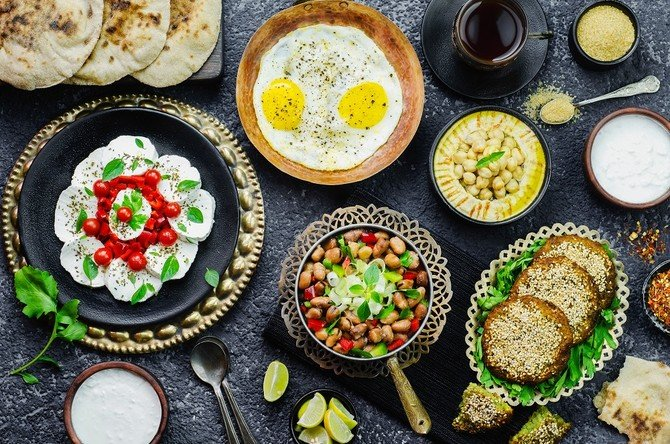
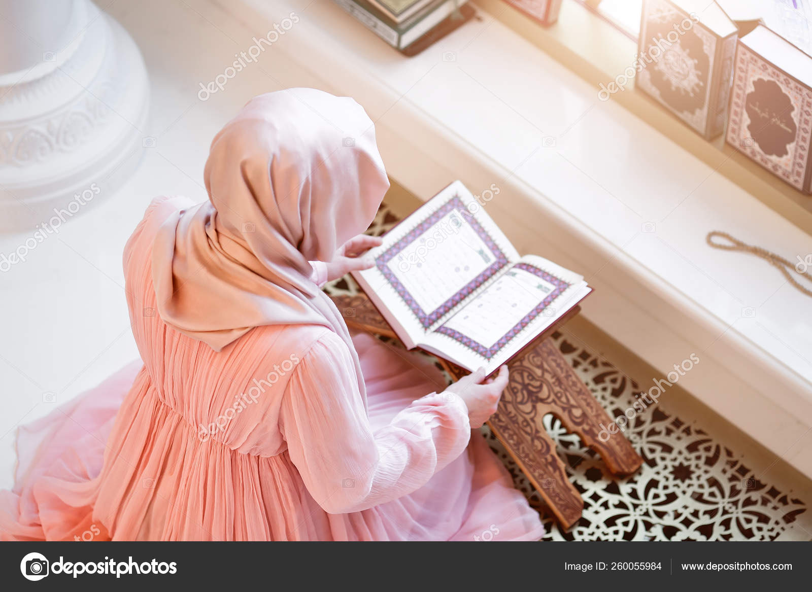
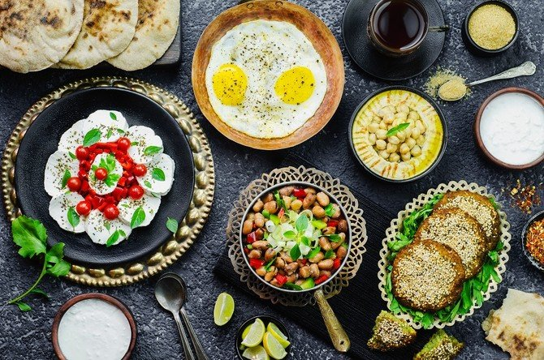
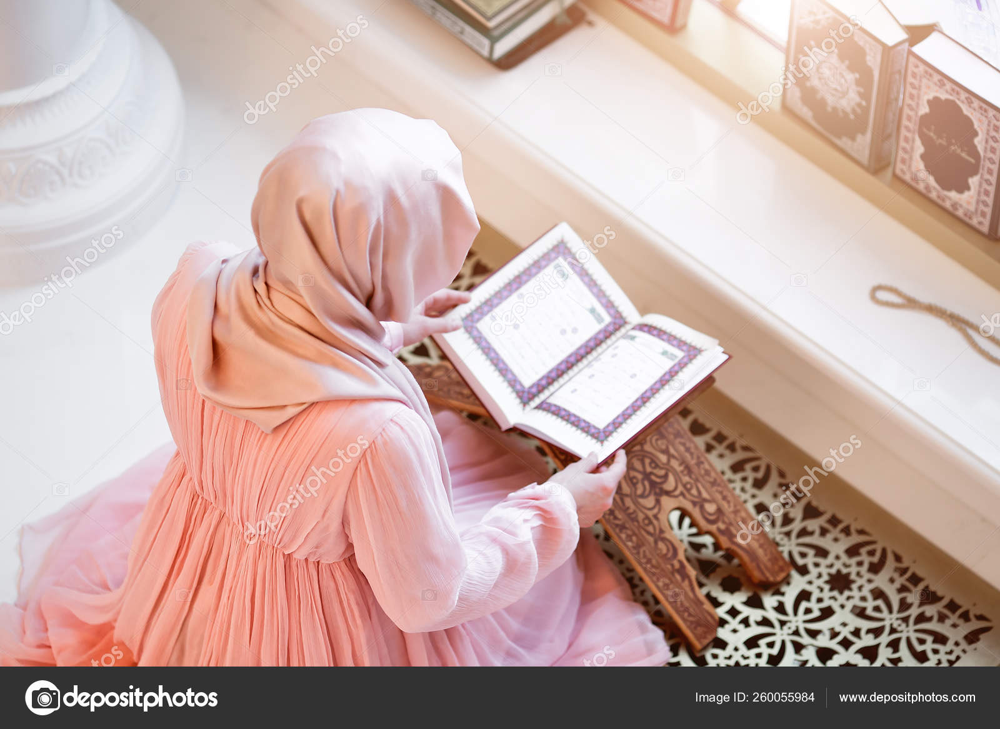

What is Ramadan?
Ramadan is the most scared month of the Islamic Calendar(its different than a Gregoriam Calendar, it is based on the lunar system). It starts and ends with the sighting of the new crescent moon, therefore it can be either 29 or 30 days and this timing differs from year to year. During this holy month we fast everyday from dawn to sunset. We start our fasting with a meal before dawn called suhoor. Usually this is something that should sustain you throughout the day, it helps with our fast. When the sun sets it is time to break our fast and this meal is called iftaar. Followed by prayers that last for long hours into the night.
Do kids fasts?
No, children, elderly, those with certain disabilities or chronic illness, travelers, anyone who is sick, pregnant, menstruating and breastfeeding women are also exempt from fasting.
What else do Muslims do during Ramadan?
Ramadan is a time when we increase ourselves in worship. It is a time when we try to stay away from bad habits and work to be a better person. It allows us to devote ourselves to our faith and also brings us close to God. It is a time to reflect and spend with family and loved ones. We show genrosity and kindness by increasing ourselves in charity. This special month is not just about going hungry. There is something special about this month and we miss it when it is gone.
What happens at the End of Ramadan?
When the new moon is sighted again it marks the end of Ramadan and the holy festival of Eid al Fitr begins. It is like Christmas for us. We start it off with a special prayer that is usually held in congregation, becase of covid this year it was held at Quenny Park to stay in compliance with CDC guideline. We exchange gifts and its a day of feasting and celebration.
 



I hope I helped clear up some information about Ramadan. If you have any questions please feel reach me at khadijabano@email.com or through instagram or facebook. I will be more than happy to answer all your questions. Ramadan Mubarak!!